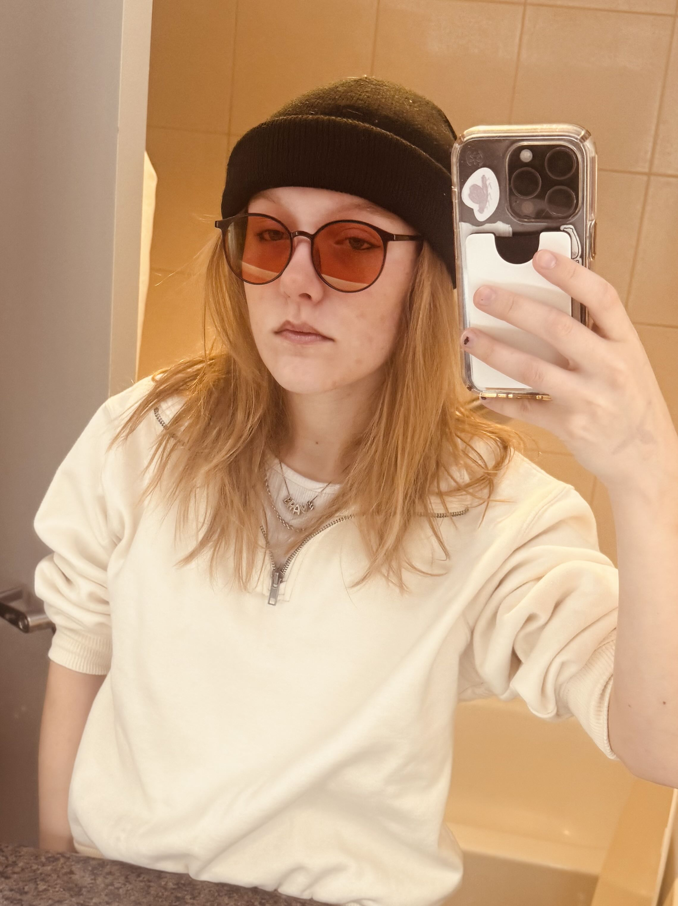

<div class="textcontainer">
<h3>Hey, I'm Hannah!</h3>
<p class="margin"> </p>
<div class="center-row">

<p id="aboutme">
I'm from Long Island, New York. My family is Czech, so thats why my name is pronounced "Hana" not Hannah, don't think you're wrong! I hear people hesitate all the time.
<br></br>
I'm in Thayer Hall, and planning on concentrating in either mechanical or biomedical engineering with a secondary in central European studies and a citation in Czech.
</p>
</div>
<br></br>
In engineering and for this class I'm focused on mechanical systems that use the symmetry of the human body to
<br></br>
-increase quality of life-
<br></br>
at a
<br></br>
-low cost-
<br></br>
for conditons that impair bilateral movement, such as stroke, cogenital paralysis and paresis, amputation, or Bell's Palsy.
<br></br>
I'm super excited that this lab is so advanced and stocked, as I'm already thinking of what I can do with the machines and hardware!
<br></br>
In my free time I like to read classics, work on my music (spotify in 2026?) go to the gym, and run two social media accounts! @itshannahbrave and @bumbaleen, one where I teach Czech and one where I draw cartoon bunnies.
<br></br>
vvv Here's a bunny I drew the other day!
<br></br>
<br></br>
This video for my Czech account is currently at 2 million views!
<br></br>
<video width="640" height="480" controls>
<source src="7739277d0aa449319701828a4a6fd5de.mp4" type="video/mp4">
</video>
</div>